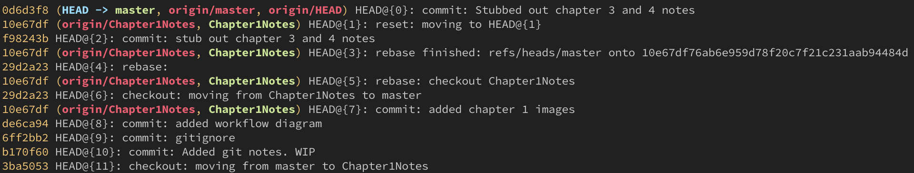
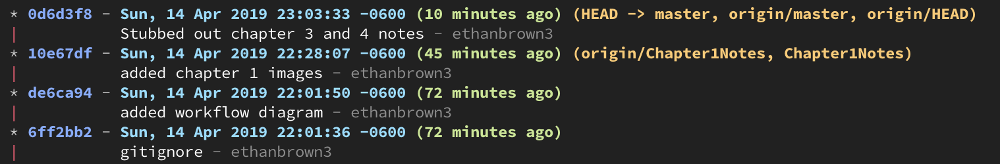

Intro to Git
Very Brief History
Created in 2005 by THE Linus Torvalds to help with developing the Linux kernel.
They were unhappy with the system they were using (BitKeeper) since the company decided to start charging them.
What is Git?
A Distributed version-control system
What's that?
Version Control System
is a system that records changes to a file or set of files over time so that you can recall specific versions later.
Distributed
Meaning the entire repository is stored on each contributor's local storage
Some Version Control Software
- Subversion
- Team Foundation Server
- Mercurial
- BitKeeper
As a distributed system this means that every local repo is a complete copy of the remote.
This gives many advantages:
- Redundancy of source code
- Easy recovery
- Working remote means you don't always need a connection to access the code
This does however come with a few complications:
- You may end up working on the same files as another contributor and have merge conflicts
- If you forget to pull you could do a lot of work that is incompatible with current state of the source code
- It can be a little difficult to get used to
- The tool is really stupid (hence the name) which ironically means you can't be
Setup
Install for Windows
Set github user information
- Open cmd prompt
> git config --global user.email "your_email@example.com"
NOTE: "your_email@example.com" is your github user email
Install for Windows https://gitforwindows.org
Set github user information
- Open cmd prompt
> git config --global user.email "your_email@example.com"
NOTE: "your_email@example.com" is your github user email
Getting Started
If you are starting a new project:
- create a new project folder
- in the console change directory to it.
>
cd path/to/my/project - initialize new git repo
>
git init - add remote repo
>
git remote add origin https://.github.com/...
If you want to pick up an existing project from a remote like github:
- go to the repo on github and click the
clonebutton - It will show you a url that you can copy
- in your console navigate to where you would like the store the repo
>
cd path/to/projects/folder - clone the repo
>
git clone https://.github.com/...
Basic Git Workflow
Now that you have a local repo we can now start tracking code changes
You have 3 parts of your local repository
- Working Directory - holds the actual files
- Index - staging area for commits
- HEAD - points to the last commit you made
Workflow Diagram

commiting changes
- Add changed files to the
Index>
git add \<filename> - Commit the index files to the
HEAD>
git commit -m "Commit message" - Push the changes to the remote repo
>
git push origin master
Branching and Merging
- Branches are a way to work on new features without changing the main code base.
- To checkout a new branch:
git checkout -b "new-branch-name" - You can then make commits as usual
- When you are ready to merge back into master:
git checkout masterthengit merge "new-branch-name" - If the master has had changes since created the new branch git will resolve any merging it can
- If there is are line(s) that were modified on both branches git will require you to resolve those conflicts and then make a new commit
Rebase vs Merge
- rebasing can sound scary at first but it's really just another method of merging.
- When rebasing git will take all the commits you made on one branch and move those on top of the other
- It does the same thing as a merge it just looks like you did all your work in the rebased branch
- The best way to learn this is to use a git visualizer simulation
- visualizing-git
Ignoring Files
- You may have environment files or IDE config filesthat are specific to your system or large asset files that you don't want to store in the remote repo.
- You can ignore these files by adding their names to a file in the repo named
.gitignore. - The file supports globs, ie.
*.envwill ignore all files that end with.env. - A good resource for predefined ignore files is gitignore.io.
Advanced Workflows
The reflog
You will start to love git once you learn to use git reflog
- reflog is used to see a history of actions on your local repo
- reverse a bad commit and rewrite history
- one of the most powerful things in git
- with great power comes something something
- It's fairly easy to undo most actions but you should always be sure of what you are doing.
- If all else fails, delete and reclone

- notice the
HEAD@{#}on each line - this refers to how many actions from the current change that action is
- if you want to take back the last commit or action you did you would run:
git reset HEAD@{1} - this will put you
working directoryinto the same state it was before that last action - you can then keep working or if you need to set the remote repo in the same state you would then run:
git push --force
WARNING: Be very careful when rewriting history on the remote. This cannot be undone and you will cause all other cloned repos to get out of sync. They will have to reclone the repo.
Aliases
Inside your .gitconfig file you can define aliases to speed up your workflow
Heres an example with git log
git log:
- visualizes your repo history
- It can take a lot of parameters
click here for example aliases
Example output of git lg2
